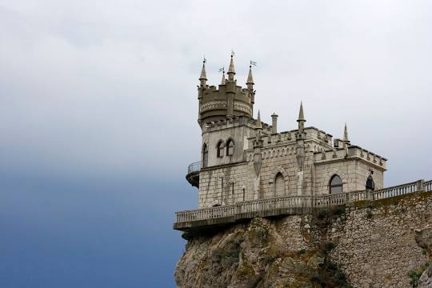

Небольшой замок «Ласточкино гнездо» — одна из самых популярнейших достопримечательностей полуострова Крым. Уже целый век это готическое строение притягивает людей своим положением на отвесной скале. История этого места берет начало в конце XIX века. По сей день точно не известно изначальное предназначение этого здания — туристический объект или место для жизни и отдыха. Первым зданием на этом месте была деревянная дача генерала русско-турецкой войны. После этого строение стало принадлежать врачу из Ливадийского дворца Тобину. Позже его вдова продала дом купчихе Рахманиной, которая и дала замку название «Ласточкино гнездо». Сегодняшний внешний вид здание получило благодаря немецкому нефтянику Штейнгелю. В 1912 году обычное деревянное здание превратилось в каменный замок с башней. Хозяева постоянно менялись, в здании были рестораны, читальный зал и другое, а также часто проводились реконструкции. Последняя глобальная реконструкция завершилась в ноябре 2020 года. Были проведены противоаварийные работы, отреставрированы внутренние помещения и башни, также обновили декоративные элементы. С 1971 года и по сей день замок является туристическим местом. Для РФ это место является культурным наследием федерального значения. |
 |